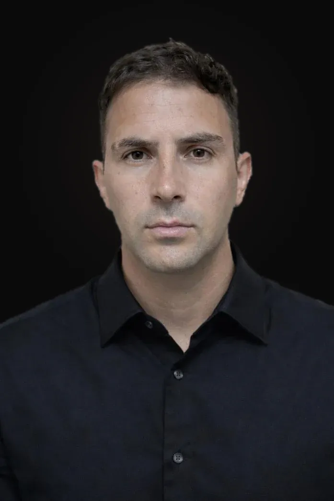
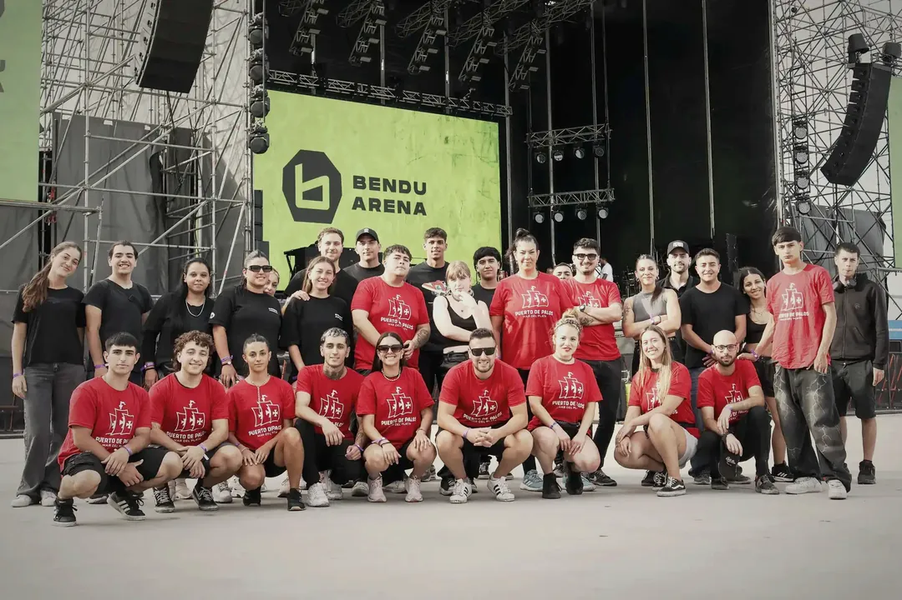

Servicios
-
Asesoramiento gastronómico
Consultoría para restaurantes, cafeterías, bares y negocios gastronómicos. Organización operativa, costos, equipos, procesos y rentabilidad.
Consultar por asesoramiento gastronómico en WhatsApp -
Gestión y desarrollo de negocios
Estructuración de operaciones, apertura de locales, optimización de recursos, capacitación y profesionalización de equipos.
Consultar por gestión y desarrollo de negocios en WhatsApp -
Inteligencia artificial y automatizaciones
Desarrollo de soluciones digitales, automatización de tareas, sistemas de gestión, aplicaciones web y herramientas de IA para negocios.
Consultar por inteligencia artificial y automatizaciones en WhatsApp -
Soluciones digitales
Diseño y desarrollo de aplicaciones, sistemas de pedidos, plataformas internas y herramientas tecnológicas para mejorar la operación comercial.
Consultar por soluciones digitales en WhatsApp

Sobre mí
Soy Ezequiel Brunner, profesional de la gestión gastronómica y estudiante de Abogacía. Trabajo en la dirección y organización de negocios gastronómicos, combinando experiencia operativa, gestión de equipos y tecnología aplicada a los negocios.
- Trayectoria
- Más de 15 años en operaciones gastronómicas.
- Sectores
- Restaurantes, cafeterías, producción y eventos.
- Formación
- Abogacía en la Universidad Kennedy (en curso), análisis de sistemas y gerenciamiento gastronómico.
Proyectos y experiencia
-
El Cóndor Coffee Shop
Coordinación de sucursales y fábrica, organización de equipos y procesos, y seguimiento de costos, stock, pedidos y calidad de servicio.
-
Puerto de Palos
Gestión gastronómica en el Casino Central, la sucursal del Centro Comercial del Puerto y la planta de panificados.
-
Asignación de salones por desempeño
Cada mañana, un proceso toma las ventas del sistema de gestión, arma un ranking por indicadores y propone qué camarero va a cada salón. La decisión es del encargado.
-
Barras para eventos multitudinarios
Equipos de hasta 135 personas: reposición, despacho, atención VIP y sistemas de cobro sin efectivo.
-
Ranking semanal de ventas
Todos los lunes suma las ventas de cada camarero, incluidas las promociones, y envía el ranking por email al responsable. Sin trabajo manual.
-
Sector cervecero
Jefe de ventas y coordinador de proyectos en una cervecería de Mar del Plata: primera exportación de la empresa y franquicias en Comodoro Rivadavia, San Juan y Malargüe.
Los casos de automatización están en funcionamiento; se omiten los nombres de los locales y del personal.
Prensa y publicaciones
En los medios
- La Capital Certificados médicos digitales: el nuevo foco de conflicto entre trabajadores y empleadores Leer en el medio (se abre en otra pestaña)
- El Retrato de Hoy Ezequiel Brunner: el desafío del derecho argentino frente a la IA en el Estado Leer en el medio (se abre en otra pestaña)
- MDP OK Puerto de Palos, referente gastronómico en producciones de gran escala Leer en el medio (se abre en otra pestaña)
Ver todas las publicaciones (26)Ver menos
- SSRN · Investigación Algorithmic Transparency as a Due Process Requirement in Automated Decision-Making (se abre en otra pestaña)
- El Retrato de Hoy · Nota Brunner: ¿El certificado médico en papel ya no alcanza para justificar una falta laboral? (se abre en otra pestaña)
- MDP OK · Nota ¿Quién responde cuando un algoritmo se equivoca? (se abre en otra pestaña)
- Biblioteca del Congreso · Doctrina citada Dossier Legislativo n.º 335: «Enfermedades y accidentes inculpables» (se abre en otra pestaña)
- SAIJ · Doctrina Cuando explicar no alcanza: responsabilidad algorítmica, prueba y reparación frente a decisiones automatizadas en la Administración Pública argentina (se abre en otra pestaña)
- SAIJ · Doctrina La salud como prioridad, el control médico como deber y los límites de la ignorancia estratégica en el régimen de licencias (se abre en otra pestaña)
- 0223 · Nota Temporada ajustada: los restaurantes del Puerto registraron una caída del 20% en ventas (se abre en otra pestaña)
- El Retrato de Hoy · Nota Puerto de Palos, una empresa gastronómica en eventos de gran escala (se abre en otra pestaña)
- SAIJ · Doctrina La sanción disciplinaria laboral como micro procedimiento (se abre en otra pestaña)
- Mar del Plata Web · Nota Orgullo marplatense: un estudiante local publicó doctrina jurídica en el SAIJ y advierte sobre la inteligencia artificial (se abre en otra pestaña)
- El Retrato de Hoy · Nota Estudiante marplatense publicó doctrina jurídica en el SAIJ y advierte sobre la inteligencia artificial (se abre en otra pestaña)
- SAIJ · Doctrina Transparencia algorítmica como garantía constitucional: hacia un modelo argentino de control real y responsabilidad pública (se abre en otra pestaña)
- Diario Constitucional · Carta al director Argentina: Reforma penal e inteligencia artificial, el Derecho ante el desafío de la era digital (se abre en otra pestaña)
- Diario Constitucional · Carta al director Los delegados del odio: cuando la representación se vuelve hostigamiento (se abre en otra pestaña)
- El Periódico · Carta de autor La caja negra de la IA (se abre en otra pestaña)
- Diario Constitucional · Carta al director Inteligencia Artificial en la Justicia: del piloto automático al riesgo de colisión (se abre en otra pestaña)
- Diario Constitucional · Carta al director La caja negra de la inteligencia artificial entra a tribunales: Chile acelera la adopción; Argentina marca límites penales (se abre en otra pestaña)
- Diario Constitucional · Carta al director Transparencia algorítmica y Derecho: cuando regular la inteligencia artificial ya no es opcional (se abre en otra pestaña)
- El Retrato de Hoy · Nota Premian a marplatense por anticipar los desafíos legales de la inteligencia artificial (se abre en otra pestaña)
- MDP OK · Nota Un estudiante marplatense es reconocido por su aporte académico sobre IA y derecho (se abre en otra pestaña)
- Universidad Kennedy · Ponencia premiada Inteligencia Artificial y Derecho: Innovación y Retos Éticos en la Legislación Tecnológica (se abre en otra pestaña)
- Sin fecha Diario Constitucional · Carta al director Phishing con IA: la inteligencia artificial perfecciona las estafas digitales y desafía al derecho (se abre en otra pestaña)
- Sin fecha La Capital · Nota Cuando una IA se equivoca: el debate jurídico que empieza a crecer en la Argentina (se abre en otra pestaña)
- Sin fecha La Capital · Nota Un estudio académico expone el vacío legal ante la inteligencia artificial (se abre en otra pestaña)
- Sin fecha La Capital · Nota Distinguen a estudiante marplatense por anticipar debate legal sobre la IA (se abre en otra pestaña)
- Sin fecha SAIJ · Doctrina Resolución 9/2025 (PBA): transparencia, explicabilidad y control algorítmico en la Administración Pública (se abre en otra pestaña)
Galería



¿Hablamos de tu próximo proyecto?
Si necesitás mejorar tu negocio gastronómico, desarrollar una solución digital o implementar inteligencia artificial en tu operación, podemos conversar.
Escribime por WhatsApp223 634-3371